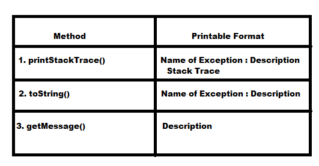

Control Flow in Try Catch:
- Case 1: If there is no Exception
then statement 1, statement 2, statement 3, statement 5 will execute with normal termination.
- Case 2:If an exception raised at statement 2 and the corresponding catch block matched
then statement 1 , statement 4, statement 5 will execute with normal termination
- Case 3:If an Exception raised at statement 2 and the corresponding catch block not matched
then statement 1 will execute with abnormal termination .
- Case 4:If an Exception raised at statement 4 or statement 5
then it will always a abnormal termination .
- Note : Within the try block if any where an Exception raised rest of the try block won't be executed eventhough we handeled that exception.
Hence length of try block should as less as possible . We have to write only risky code within the try block, but not normal java code .
- In addition to try block there may be a chance of raising Exception inside catch and finally blocks also .
- If any statement raises an Exception and if it is not part of try block then it is always Abnormal termination of the program .
Method to print Exception information:
- Throwable class defines the following methods to print Exception information .

- Default Exception Handler always print Exception information by using printStackTrace() method .